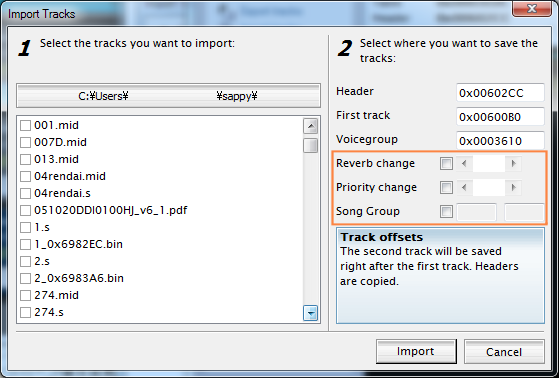
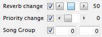
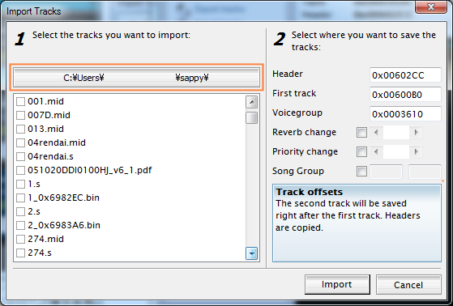
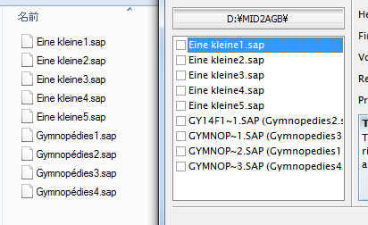

Import Tracks の拡張について
Import Tracks は、オリジナルに対して 2 つ機能を追加しています。

オリジナルでは、マスターリバーブ値や優先度はインポートしようとしているトラックの値をそのまま使用するようになっていましたが、これを変更できるようにしています。
Mod 16.1 からは、さらに曲グループの指定もできるようになりました。
これらのチェックは標準では外れていて、オリジナルと同じ動作となります。

チェックを入れると上のようになり、値をセットできるようになります。
- マスターリバーブ値の設定
- マスターリバーブ値を変更することで、曲全体のリバーブ量を変更することができます。セット出来る値は、0〜127 と 「---」です。
0〜127 で、0 でリバーブ無し、 127 で最大となります。
「---」とは、前に演奏されていた曲のリバーブ値を引き継ぐ（つまり、変更しない）設定です。スクロールバーを一番左まで持って行くと表示されます。効果音等 BGM に影響を与えてはいけない場合に使用します。
- 優先度(Priority)の設定
- 優先度とは、BGM と効果音等、 2 つ以上の曲が同時になった場合、どちらを優先して鳴らすかを決める値です。 0〜255 の間で、値が大きい方が優先されます。
同時発音数以上の音が鳴る場合に、優先度の高い曲データの音を優先して鳴らします。
例として、BGM は 0 （優先度最低）、効果音等に 1 以上の値を入れることで、ゲーム中に確実に効果音を鳴らすようにできます。逆に BGM に 1 、効果音に 0 を入れてしまうと、効果音が鳴らないというようなことが起こります。
- 曲グループ(Song Group)の設定
- 曲グループを変更する場合にはチェックを ON にして値を入力してください。左の入力欄が 1: 側、右の入力欄が 2: 側になります
曲グループについての説明はこちらをご覧ください。
ファイル一覧の拡張について

オリジナルから変更した部分として、トラック選択時にフォルダが指定できるようになりました。
フォルダ表示部をクリックすると、フォルダ選択ダイアログが表示されますので、インポートしたいファイルのあるフォルダを選択してください。
下のファイル一覧のリストが更新されます。
ファイル一覧リストも変更点があります。

左が explorer 側の表示、右が sappy の表示です。
ファイル名に、リストに出力できない文字が含まれている場合（上記の例では、 Gymnopédies の「é」が表示できず「e」に変換されてしまっています）
左側にショートファイル名が表示され、括弧書きで（表示出来ない文字が代替表示された）ロングファイル名が表示されます。